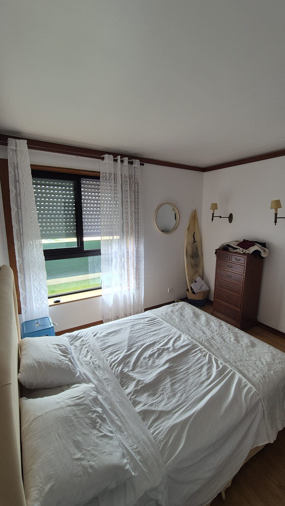
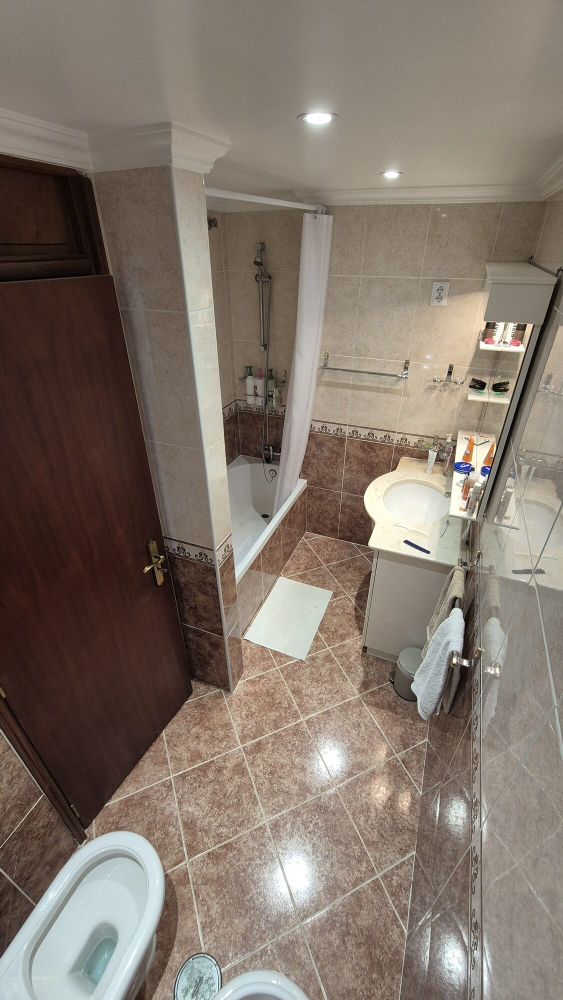
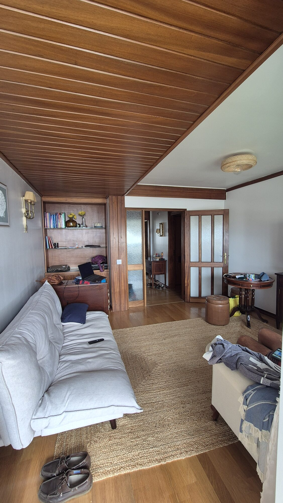
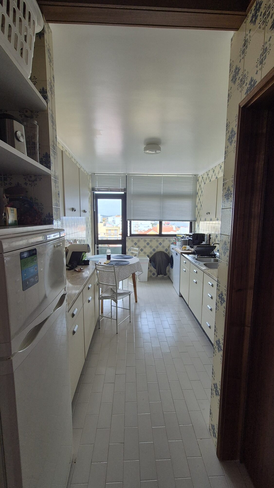
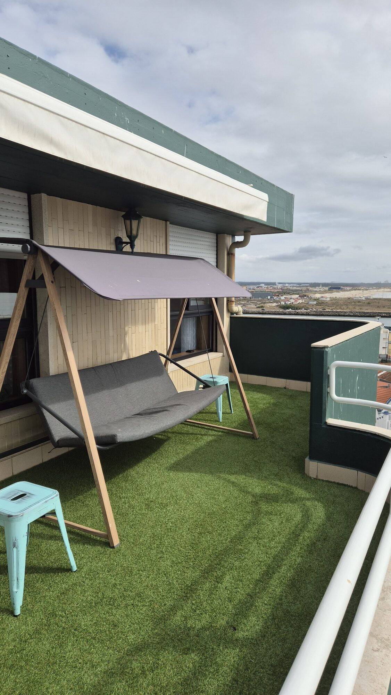
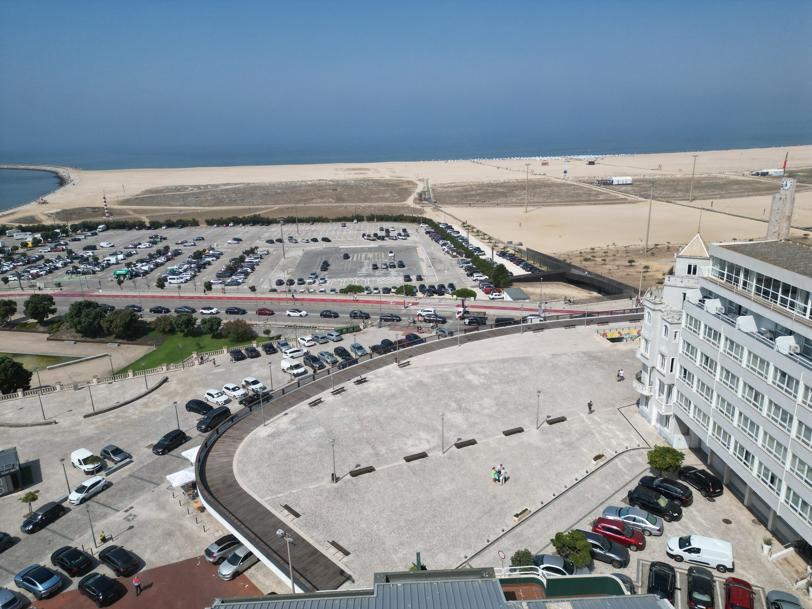

5º andar · Figueira da Foz
Casa do
Poente
Um último andar a poucos passos da praia, com varanda privada virada a Oeste para ver o sol desaparecer no Atlântico.
Conhecer a casaNo coração da Figueira da Foz, a construção fica a uma curta caminhada da areia, da esplanada junto ao mar e do Forte de Santa Catarina. Do quinto andar, a vista acompanha os telhados da baixa até à linha do horizonte.
A casa
Espaço para quatro, com conforto de sobra

Dois quartos
Espaços de descanso pensados para casais ou famílias, com arrumação para estadias mais longas.

Casa de banho
Completa e equipada para o dia a dia de quem visita a cidade e a praia.

Sala com sofá cama
Um terceiro leito discreto para receber mais um hóspede sem abdicar do espaço de estar.

Cozinha com varanda
Equipada para cozinhar em casa durante a estadia, com uma segunda varanda para arejar e estender roupa.

A varanda
Um baloiço, relva sintética e o pôr do sol sobre a Figueira
A varanda principal foi pensada para ficar cá fora até o dia acabar. Relvado sintético, toldo para os dias de mais sol e um baloiço confortável virado a Oeste, o lugar certo para acompanhar o fim de tarde com o mar como fundo.
Equipamentos
Tudo o que uma estadia precisa
- Wifi gratuito
- Máquina de lavar loiça
- Máquina de lavar roupa
- Fogão a chapa
- Micro-ondas
- Frigorífico
- Air fryer
Localização
A caminho da praia, sem sair da cidade
O prédio fica na Rua Engenheiro Silva, nº 96, junto à baixa da Figueira da Foz, entre ruas com comércio local e o troço final do rio Mondego. A pé, chega-se com facilidade à esplanada, à praia e ao passeio marítimo em direção ao Forte de Santa Catarina.



Perto de casa
A pé, em poucos minutos
- 1 minTennis Club & Forte de Santa Catarina
- 2 minSupermercado OVO Azul
- 3 minCasino Figueira
- 4 minMercado Municipal Eng. Silva
- 4 minFarmácia Santa Ana Jardim
- 5 minJardim Municipal
Interessado em reservar a Casa do Poente?
Envie os dias que procura e confirmamos a disponibilidade.
Pedir disponibilidade